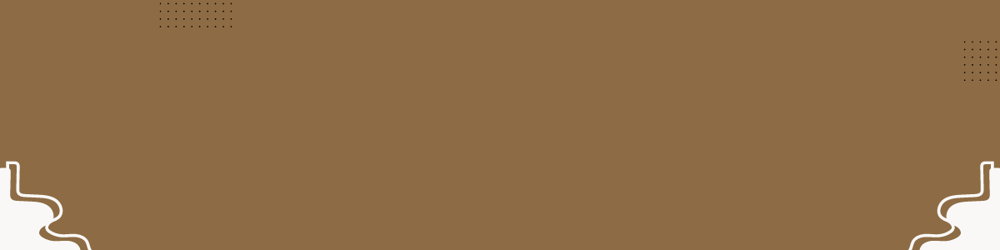

Adopta,encuentra tu mascota ideal con nosotros y
la ayuda de los diferentes albergues donde encontrarás a tu proximo mejor amigo
Problema
El tener perros o animales abandonados en la calle causa varios problemas según el Infobae se estima que hay por lo menos 3 millones de perros y gatos abandonados en Colombia.Por un lado, representa un riesgo para la salud pública, ya que pueden propagar enfermedades y representar un peligro para las personas que transitan por esas áreas. Además, muchos de estos animales sufren condiciones precarias, incluyendo falta de alimentación adecuada, refugio y cuidados veterinarios, lo que resulta en sufrimiento para los animales y afecta negativamente el bienestar de la comunidad. El abandono de animales también contribuye al super poblamiento en refugios y aumenta la carga sobre los servicios de control animal.
Tiene varias causas., algunas personas pueden abandonar a sus mascotas debido a cambios en su situación personal, como mudanzas, problemas económicos o falta de tiempo para cuidar adecuadamente al animal. Además, algunas personas no comprenden la responsabilidad que implica tener una mascota y pueden abandonarla cuando se dan cuenta de que requiere cuidados y atención constantes. El abandono de perros también puede estar relacionado con la falta de conciencia sobre la importancia de la esterilización para controlar la población animal. Es una situación muy triste que afecta a muchos animales indefensos.

Servicios
En el Centro de Cuidado y Adopción de Mascotas, nos dedicamos apasionadamente a brindar una segunda oportunidad a los animales callejeros. Nuestro enfoque integral incluye la búsqueda de hogares amorosos, paseos diarios para promover su bienestar físico y mental, así como programas de esterilización y vacunación para garantizar su salud a largo plazo. Además, ofrecemos sesiones de spa para mascotas, donde reciben cuidados especiales y cariño. Nuestro compromiso va más allá de la adopción; también proporcionamos educación sobre la crianza responsable de animales, asesoramiento para familias adoptivas y seguimiento post-adopción para asegurarnos de que cada animal encuentre un hogar adecuado. Creemos en un mundo donde todos los animales sean amados, protegidos y cuidados como miembros valiosos de la familia

¿Quienes somos ?
En el Centro de Cuidado y Adopción de Mascotas, nos dedicamos apasionadamente a brindar una segunda oportunidad a los animales callejeros. Nuestro enfoque integral incluye la búsqueda de hogares amorosos, paseos diarios para promover su bienestar físico y mental, así como programas de esterilización y vacunación para garantizar su salud a largo plazo. Además, ofrecemos sesiones de spa para mascotas, donde reciben cuidados especiales y cariño. Nuestro compromiso va más allá de la adopción; también proporcionamos educación sobre la crianza responsable de animales, asesoramiento para familias adoptivas y seguimiento post-adopción para asegurarnos de que cada animal encuentre un hogar adecuado. Creemos en un mundo donde todos los animales sean amados, protegidos y cuidados como miembros valiosos de la familia

Necesitamos tu apoyo y puedes donar mediante las siguentes plataformas
- Nequi:42429521
- Bancolombia: 312312312
- Davi plata: 141222331